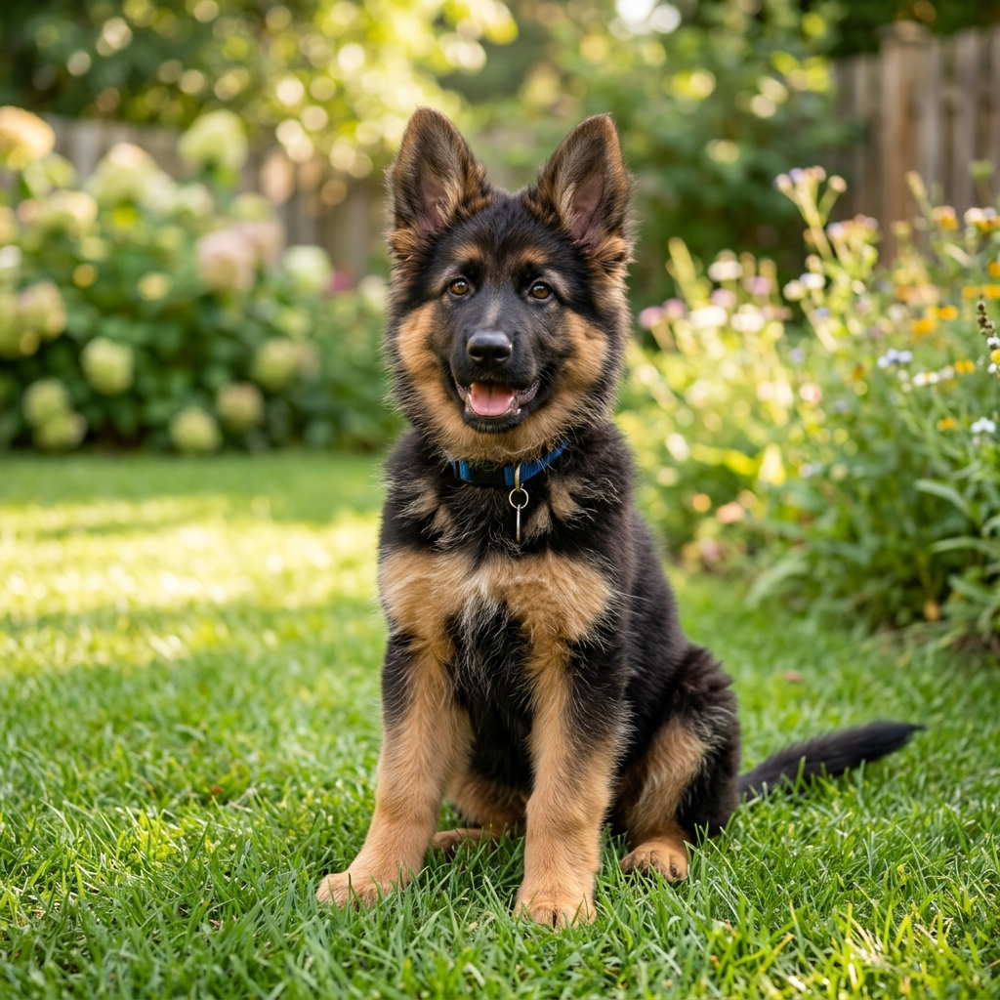
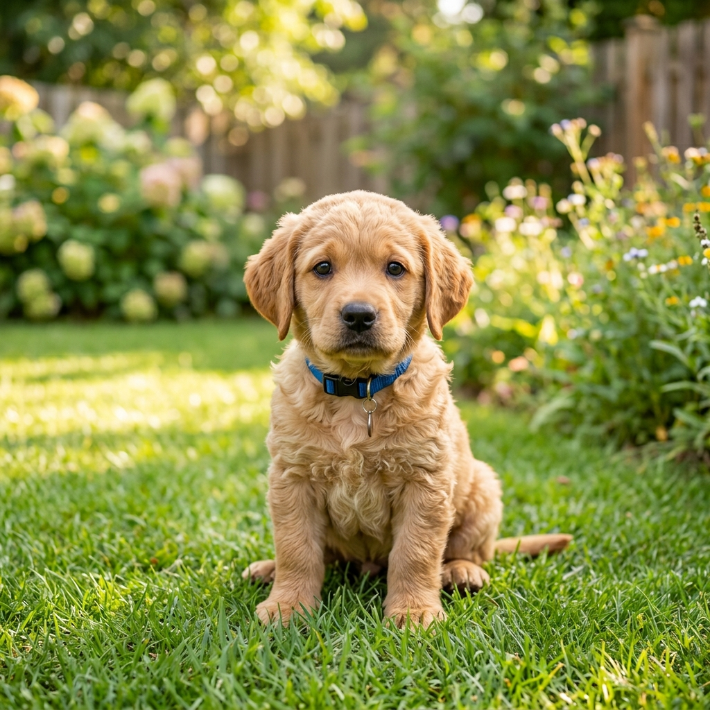
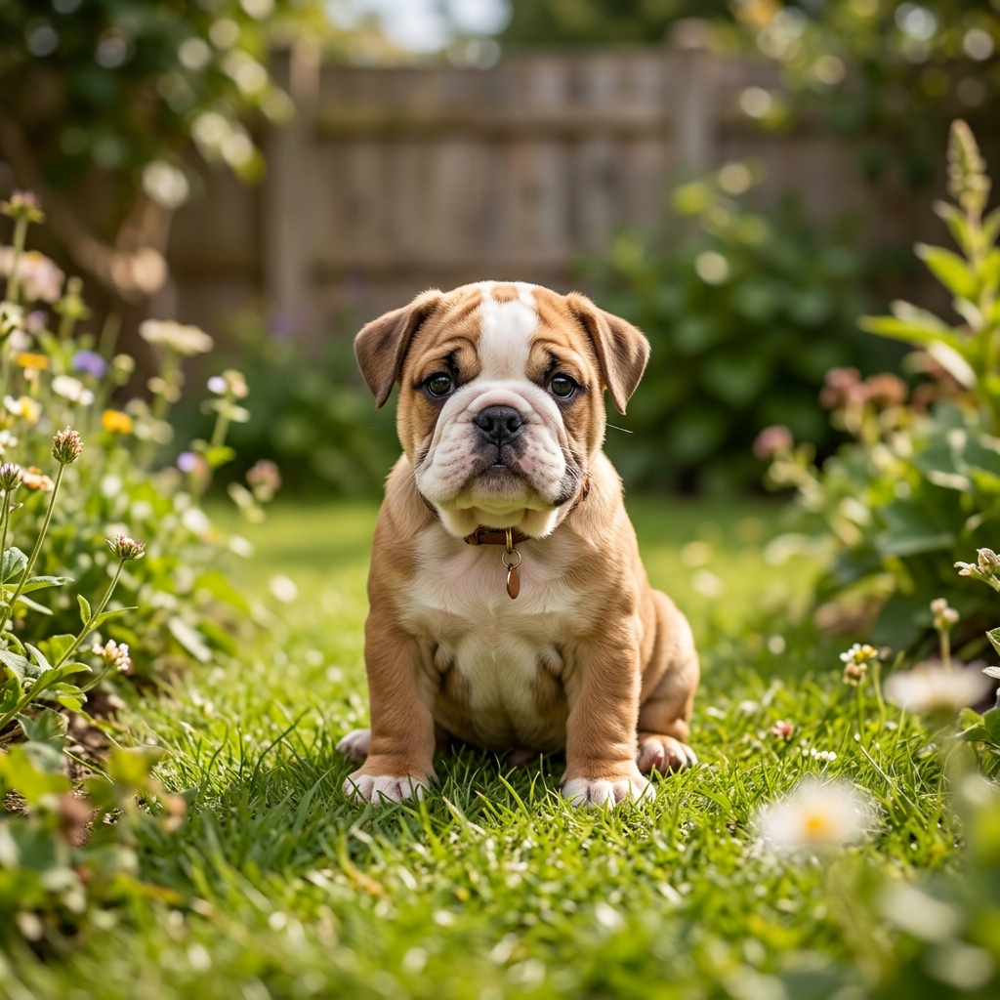
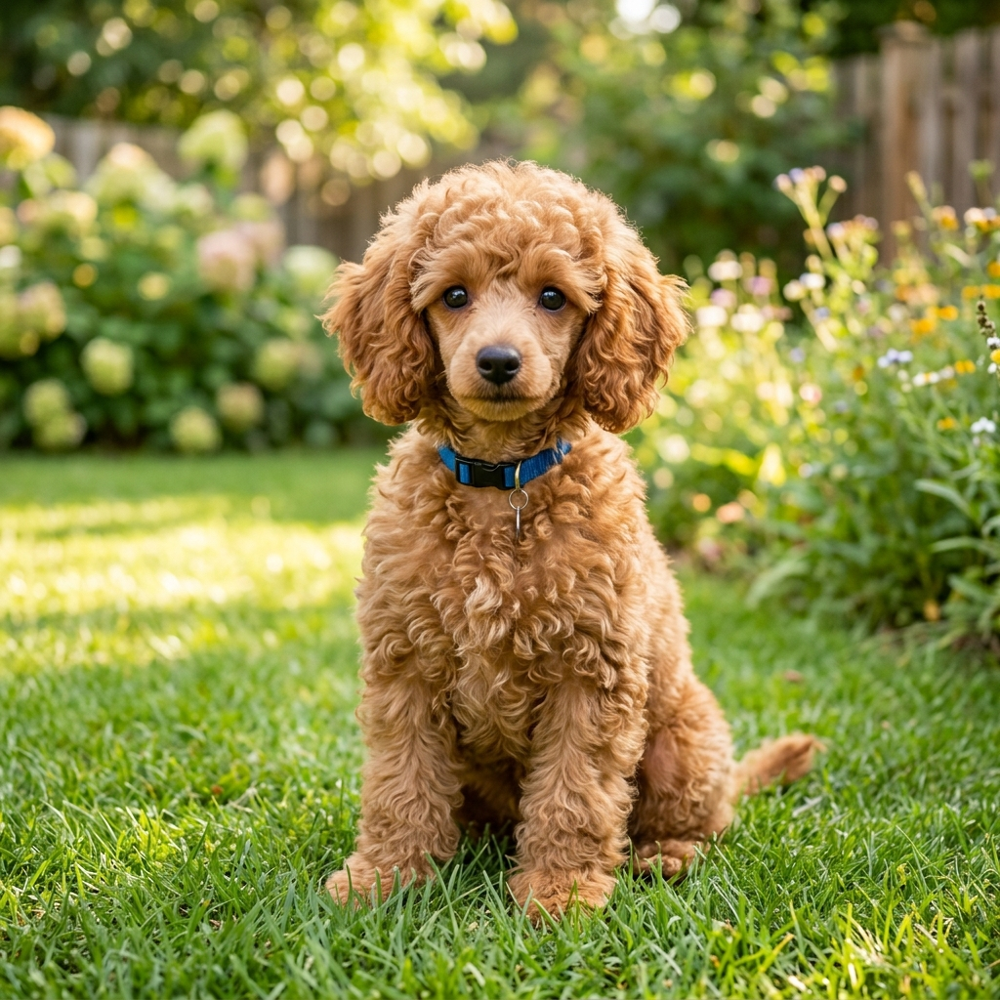
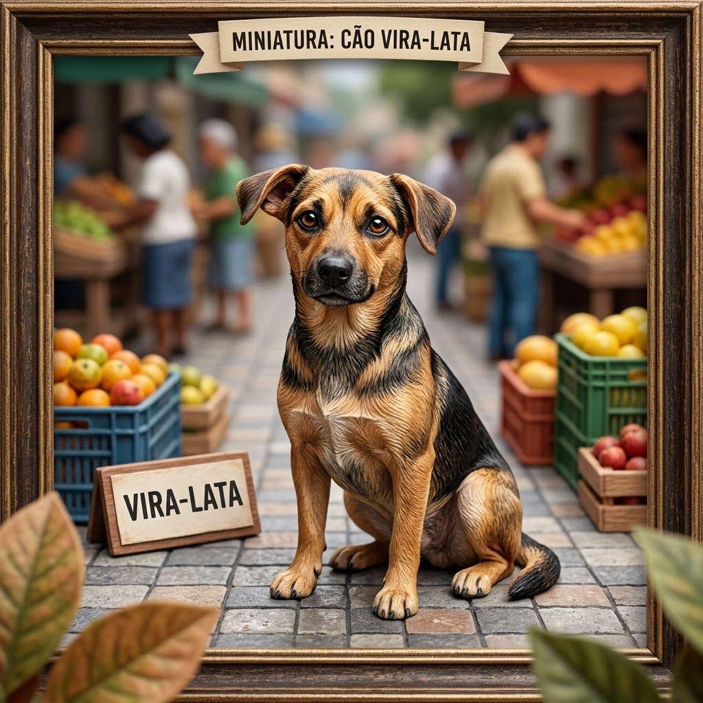

Explore as raças
Do porte pequeno ao grande, do pelo curto ao longo — cada raça tem algo especial.
Clique nas imagens e saiba mais!






Conheça as principais raças de cães, em um só lugar.
Do porte pequeno ao grande, do pelo curto ao longo — cada raça tem algo especial.




